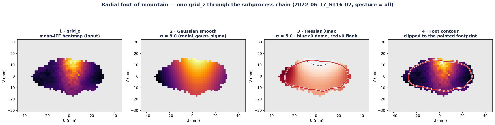
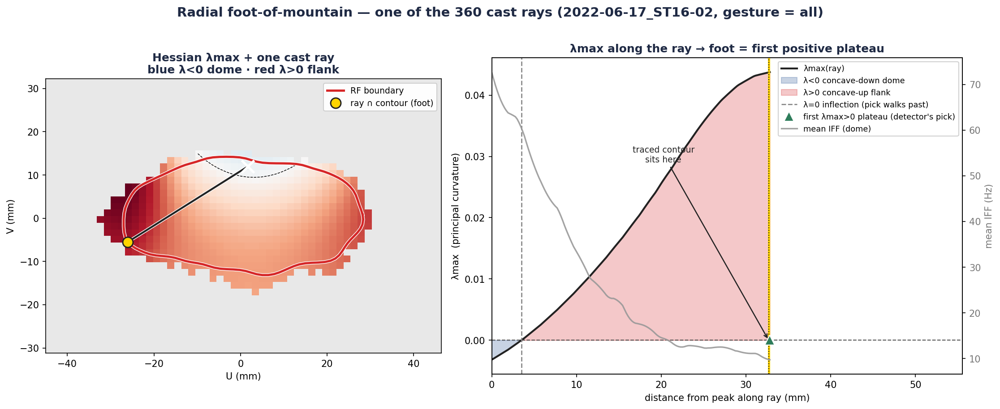

A neuron's receptive field, drawn as a heatmap, looks like a hill. Its edge isn't a fixed brightness — it's the foot of the mountain, the ring where the hillside's upward-curving flank crests as it eases into the plain. This page is built around one live sandbox: build a dome once, and every diagram below is that same dome, dissected.
01 — The intuition
In this pipeline, a touch-responsive neuron is summarised as a heatmap on the skin: each point on the forearm gets a firing value (mean IFF). Strongly-driven skin is bright, unresponsive skin is dark. Plot the value as height and you get a response dome — tall near the neuron's hotspot, sloping away in every direction.
Where does the receptive field end? The tempting answer is "pick a brightness and cut there." But a fixed cutoff punishes some neurons and flatters others: a tall, sharp dome and a low, broad dome would get boundaries of completely different meaning.
The foot of the mountain idea sidesteps that. Walk downhill from the peak. For a while the ground curves the way a hilltop does — bulging over, concave-down. Then, as the slope eases into the surrounding plain, the ground dishes the other way, concave-up. The bending flips partway down (that flip is the inflection, still on the steep slope); the foot is a step further out — where that upward dishing is strongest, its crest, right where the hillside settles into the plain. That crest is a property of shape, not of brightness — so it adapts to every dome on its own terms.
02 — The sandbox · the instrument the whole page reads from
This is the only control panel on the page. The sliders build a synthetic response heatmap, and the left column shows the entire pipeline in three stages, stacked: ① raw response (dome + noise) → ② smoothed at σgauss → ③ λmax curvature field measured from the smoothed dome by the Hessian at σhess. Each arrow is one operation; move a slider and you see exactly what it does to the next stage.
In the λmax field, curvature is painted blue where < 0 (the concave-down cap) and red where > 0 (the concave-up flank). The detector does not stop at the λmax = 0 crossing (the faint dashed inflection, where red just begins) — it walks outward to the crest of the red ridge, the amber foot ring, where the surface dishes upward most strongly. Drag on any of the three left maps to aim the ray; the right panel plots λmax and dome height along it — one spoke of the real 360-ray detector.
Don't worry yet about how λmax is computed — the sections below dissect it (a 1-D slice, the Hessian's three fields, its eigenvectors, the surface in 3-D, the threshold test). Every one of them is a view of the dome you build here. Change a slider and they all move together. First, just get a feel.
Grey = dome height (right axis). Blue/red fill = λmax by sign. The green marker sits at the crest of the first positive λmax plateau — the foot pick on this ray; the amber line is where the 2-D foot ring sits. The faint dashed λ=0 tick is the inflection the pick walks past.
shapes stage ①
shapes stage ①
roughens stage ①
① → ② arrow
② → ③ arrow
03 — Slow down · one slice of your dome
The λmax field you just built is a 2-D object, which is a lot to hold at once. So take a knife to it: this is a single horizontal slice through the peak of the smoothed dome (stage ②) above. "Curvature" here is just the second derivative of that slice — how the slope itself is changing. Near the top the slope is getting more negative as you move out (curving down): second derivative < 0. Far out on the tail the slope is levelling back toward flat (curving up): second derivative > 0. Between them sits the inflection point — second derivative exactly 0 — the 1-D "foot".
Drag along the curve. The dot reports which way the ground is bending under it. Then go back to the sandbox, change breadth or σgauss, and watch this slice — and its inflections — move with the dome.
Drag the probe. Blue stretches are the dome cap (bending over); red stretches are the feet (bending up); the marked points where blue meets red are the inflections — the 1-D boundary.
The 2-D generalisation of this second derivative is the Hessian — the very next section — and its λmax = 0 ring is where these 1-D inflections live all the way around the dome.
04 — Why one number isn't enough
On the real skin surface the dome bends in every direction at once, and it can bend by different amounts depending on which way you look — steeply across the field's short axis, gently along its long axis. A single number can't capture that. You need the bending in the two principal directions: the sharpest bend and the gentlest bend at that spot.
Those two numbers are the principal curvatures. The tool that produces them is the Hessian — a little 2×2 table of the surface's second derivatives at each grid cell (r, c):
grr is the bending as you move along rows, gcc along columns, and grc is the twist between them.
The two eigenvalues of this table are the two principal curvatures — no directions to guess, the maths hands you the sharpest and gentlest bend directly. We keep the larger one and call it λmax. Why the larger? Because at the foot, the surface is already dishing upward in the radial direction (curving up out of the slope) even while it may still curve down around the ring. The larger principal curvature is the first to go positive — it's the earliest, most sensitive signal that the flattening has begun.
For a 2×2 symmetric table the eigenvalues have a closed form — no solver needed:
Flip the + before the root to a − and you get λmin, the gentler curvature. Two familiar quantities hide inside: grr+gcc is the trace (the same Laplacian you may have met before), and grr·gcc − grc² is the determinant. So λmax is just trace/2 + √((trace/2)² − det).
The Hessian isn't a black box — it's assembled from three measured second-derivative fields of the smoothed dome you built in the sandbox (stage ②). Here they are right now: grr (bending down the rows), gcc (bending across the columns), and grc (the diagonal twist). Blue is negative, red positive. Move the sandbox sliders and these three fields breathe with the dome.
Combine these four ways (grr and gcc on the diagonal, grc off it) into the 2×2 table above, take its larger eigenvalue, and you get λmax — the field in stage ③ that the whole method runs on.
λmax is a number — the sharpest curvature — but it also has a direction: the way you'd walk to feel that sharpest bend. That direction is the Hessian's eigenvector for λmax, and it always sits perpendicular to the λmin direction. For the 2×2 table its angle is φ = ½·atan2(2·grc, grr − gcc). Drag the probe on your sandbox dome: the red arrow points along λmax (sharpest bend — near the foot it points radially, straight out from the peak), the blue arrow along λmin (gentlest bend, around the ring).
A raw second difference (f(x+1) − 2f(x) + f(x−1)) is brutally noise-sensitive. The fix is a classic identity: differentiating a blurred field equals convolving with the derivative of the blur kernel — d/dx (Gσ ∗ f) = (dGσ/dx) ∗ f. So skimage.hessian_matrix never differentiates raw data; it convolves the field with the second derivative of a Gaussian at scale σhess, which smooths and differentiates in one stroke. The σhess slider is choosing how wide that derivative kernel is — i.e. the scale of bending the detector responds to. This page's sandbox approximates it faithfully by blurring at σhess and then taking simple second differences — mathematically the same operation.
05 — See it in 3-D · raw data → after the Hessian
So far the heatmaps have been flat, top-down. But the response field really is a hill — so let's stand up the exact dome you built in the sandbox. Drag to orbit. Then drag the slider to morph from the raw response dome (stages ①–②) into the λmax curvature surface (stage ③) the Hessian computes from it, and watch what the machine actually "sees".
The colour is the same on both shapes: blue where λmax < 0, red where λmax > 0, with the amber foot ring drawn on the surface. The raw dome is a single bump; its curvature surface is a crater with a raised rim — a dip below zero over the concave-down cap, rising to a positive ridge at the concave-up flank. The amber ring rides the crest of that positive rim, where λmax peaks — a step outside where the crater floor merely climbs back through zero. Switch to the sandbox's Tall & sharp preset and the crater goes deep and tight; Low & broad makes it shallow and wide — but both cross zero at their own foot.
Drag the surface to orbit. This is the same dome as every other panel — change a sandbox slider and the hill here re-forms to match.
06 — The payoff
Here's the argument the sandbox lets you check rather than take on faith, and it runs on the very dome you built. Below, the same λmax field carries two candidate boundaries: the amber curvature foot (crest of the concave-up λmax ridge) and a fixed-brightness cutoff at one absolute IFF level — the same number for every dome.
Switch the fixed-brightness ring on, then go up to the sandbox and drag Dome height (or click Tall & sharp / Low & broad). Watch the two radii in the readout: the amber ring stays glued to the foot as the shape changes, while the fixed cutoff slides in and out — too tight on a tall dome, too loose on a low one, and it vanishes entirely once the peak drops below the cutoff. One fixed number means a different thing on every neuron; the curvature sign rescales itself to each.
One live dome, two rules. The amber curvature ring tracks the foot no matter what you do to the shape; the dashed fixed cutoff can't be right for every dome at once — which is precisely the failure the curvature method is built to avoid.
07 — Grounded in the real data
The sandbox is synthetic so you can play; the pipeline runs the identical logic on measured heatmaps. Below is neuron ST16-02 going through the real chain — the input heatmap, the Gaussian pre-smooth, the Hessian λmax field with its traced foot, and the clipped result. Read it as the fixed, real-data twin of the three stages in your sandbox.


You've now got the whole conceptual core. Turning that λmax field into a single closed RF boundary is bookkeeping on top of it:
The closed contour then feeds the metrics — area, perimeter, circularity, a PCA ellipse — and is written to the output NPZ under the boundary_ prefix. All of it rests on the one sign-flip you just built.
08 — Check yourself
Because it's the earliest, most sensitive sign that flattening has begun. Walking out from the peak, the radial direction dishes upward before the surface flattens all around — so the larger principal curvature crosses zero right at the foot, giving the cleanest edge.
Second derivatives amplify noise ferociously. A single hot cell in the raw heatmap has huge local curvature. Blurring first (σgauss = 8) removes that speckle so the curvature you measure belongs to the dome, not the noise. Set σgauss = 0 with noise up in the sandbox to watch stage ③'s ring disintegrate.
No. The λmax = 0 crossing is only the inflection, where the concave-up flank begins — still on the steep slope. The detector casts rays and, on each, keeps the crest of the first positive-λmax plateau (find_peaks with require_positive): the point where the surface dishes upward most strongly, a step further out, right where the hillside eases into the plain. Picking the zero-crossing instead would pull the ring in onto the slope.
A fixed IFF level means different things for a tall sharp dome and a low broad one. Curvature sign is a property of shape, so it rescales to each neuron automatically — the same rule fits both, as the comparison panel shows when you drag the height slider.